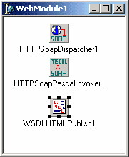
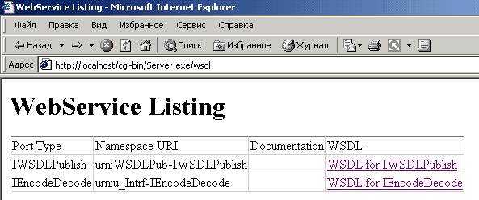
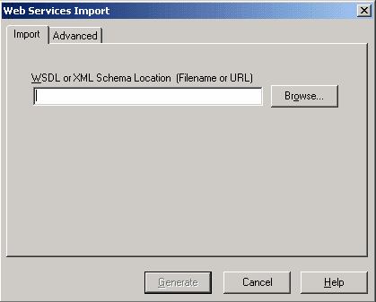
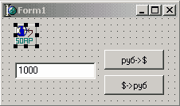

Использование Web Services
Что такое Web Service
Последний вид приложений для Web, о котором я хочу рассказать в данном цикле статей– это Web Services. Web Service – это приложение-сервер, предоставляющее клиенту свои функции через протоколы Internet. В отличие CGI и других подобных internet приложений, Web Services ориентируются не на предоставление информации человеку в удобной для восприятия форме, а на обмен информацией между приложениями.
Общение клиента и сервера осуществляется путем обмена сообщениями. Web Service может представить клиенту описание своих возможностей в терминах принимаемых и генерируемых им сообщений. При этом детали реализации сервера скрыты от клиента. Таким образом, с точки зрения клиента Web service представляется «черным ящиком», с определенной функциональностью и заданными способами публикации описания этой функциональности. С другой стороны серверу безразлично как именно клиент формирует сообщения и использует полученные результаты. Налицо компонентно-ориентированный подход.
Применение в качестве транспортного протокола доставки сообщений протокола HTTP позволяет взаимодействовать клиента и сервера вне зависимости от аппаратной платформы и ОС.
Протокол SOAP
Помимо транспортного протокола для вызова методов сервера необходим единый протокол, описывающий формат сообщений вызова методов сервера. В качестве такого протокола используется SOAP – Simple Object Access Protocol. Спецификация SOAP 1.1 можно найти в Web по адресу www.w3.org/TR/SOAP. SOAP позволяет использовать вызов удаленных процедур (RPC) через HTTP.
Запросы кодируются в формате XML. Это имеет свои достоинства и недостатки. Достоинства:
| · | Легкость восприятия текста запроса человеком («читабельность»); |
| · | Наличие парсеров XML, позволяющих достаточно просто осуществлять анализ поступающих сообщений. |
Из недостатков можно отметить больший объем сообщений по сравнению с бинарными форматами представления данных. Ниже представлен пример SOAP запроса:
POST /examples HTTP/1.1
User-Agent: Radio UserLand/7.0 (WinNT)
Host: localhost:81
Content-Type: text/xml; charset=utf-8
Content-length: 474
SOAPAction: "/examples"
<?xml version="1.0"?>
<SOAP-ENV:Envelope
SOAP-ENV:encodingStyle="http://schemas.xmlsoap.org/soap/encoding/"
xmlns:SOAP-ENC="http://schemas.xmlsoap.org/soap/encoding/"
xmlns:SOAP-ENV=”http://schemas.xmlsoap.org/soap/envelope/”
xmlns:xsd="http://www.w3.org/1999/XMLSchema"
xmlns:xsi="http://www.w3.org/1999/XMLSchema-instance">
<SOAP-ENV:Body>
<m:getStateName xmlns:m="http://www.soapware.org/">
<statenum xsi:type="xsd:int">41</statenum>
</m:getStateName>
</SOAP-ENV:Body>
</SOAP-ENV:Envelope>
Рассмотрим заголовок запроса. Формат URI в первой строке запроса не специфицирован. Например это может быть просто / или, как в нашем примере /examples.
User Agent и Host должны быть указаны. Content-Type, т.е тип содержимого запроса, естественно, text/xml. Content-Length - lлина запроса.
SoapAction – значение данного поля используется для передачи сообщения нужному обработчику сообщений сервера. Как правило, значение SoapAction совпадает с URI в первой строке запроса.
Тело запроса представляет собой документ в формате XML. Корневой тег SOAP-ENV:Envelop содержит внутри себя тег SOAP-ENV:Body, содержащий описание вызываемой процедуры. В нашем примере сообщение описывает запрос на вызов процедуры getStateName с параметром statenum равным 41.
Ответ сервера при успешном вызове выглядит так:
HTTP/1.1 200 OK
Connection: close
Content-Length: 499
Content-Type: text/xml; charset=utf-8
Date: Wed, 28 Mar 2001 05:05:04 GMT
Server: UserLand Frontier/7.0-WinNT
<?xml version="1.0"?>
<SOAP-ENV:Envelope
SOAP-ENV:encodingStyle="http://schemas.xmlsoap.org/soap/encoding/"
xmlns:SOAP-ENC="http://schemas.xmlsoap.org/soap/encoding/"
xmlns:SOAP-ENV=http://schemas.xmlsoap.org/soap/envelope/
xmlns:xsd=http://www.w3.org/1999/XMLSchema
xmlns:xsi="http://www.w3.org/1999/XMLSchema-instance">
<SOAP-ENV:Body>
<m:getStateNameResponse xmlns:m="http://www.soapware.org/">
<Result xsi:type="xsd:string">South Dakota</Result>
</m:getStateNameResponse>
</SOAP-ENV:Body>
</SOAP-ENV:Envelope>
Отметим лишь наиболее важные моменты:
| · | Пространство имен в описании ответа (тег < m:getStateNameResponse >) должен совпадать с пространством имен в запросе. В нашем примере пространство имен – m |
| · | Имя тега описания ответа формируемся добавлением слова Response к имени вызываемой процедуры. В нашем случае это m:getStateNameResponse |
Разработка сервера Web Services в Delphi6
Delphi 6 позволяет создавать как сервера, так и клиентов Web Services. Мы начнем рассмотрение с создания сервера.
Создание сервера Web Services в Delphi6 состоит из следующих этапов:
| 1. | Описание интерфейса сервера, то есть методов, которые будут доступны для вызова клиенту; |
| 1. | Реализация методов сервера; |
| 1. | Создание проекта Delphi и включение в него результатов первых двух шагов. |
Последовательно опишем каждый из этапов.
Описание интерфейса сервера
В Delphi при создании сервера Web Services методы доступные для вызова клиенту описываются в виде invokable интерфейсов. Invokable интерфейс – это интерфейс для методов которого доступна RTTI (информация о типах на этапе выполнения). Для того чтобы из обычного интерфейса сделать invokable достаточно указать директиву компиляции {$M+}. После этого все потомки и сам интерфейс будут содержать RTTI. В иерархии VCL уже есть такой интерфейс IInvokable. Таким образом, при написании сервера проще всего унаследовать свой интерфейс от Iinvokable. Кроме того необходимо зарегистрировать свой интерфейс в invocation registry. Регистрация позволяет серверу определить класс, реализующий методы интерфейса, а клиенту получить описание методов, поддерживаемых сервером. Регистрация осуществляется вызовом метода InvRegistry.RegisterInterface в секции initialization модуля.
Так как интерфейс используется не только сервером, но и клиентом, то желательно определить его в отдельном модуле Delphi.
Для примера мы разработаем сервер, который будет осуществлять пересчет денег из долларов в рубли и обратно. В IDE Delphi выберем пункт меню File/New/Unit. В полученном пустом модуле определим интерфейс сервера:
unit u_Intrf;
interface
type
IEncodeDecode = interface(IInvokable)
['{32B3312E-684C-444D-88DB-13DE6F535F6D}']
// Конвертация долларов в рубли
function US2RUS(Value: Currency): Currency; stdcall;
// Конвертация рублей в доллары
function RUS2US(Value: Currency): Currency;
stdcall;
end;
implementation
uses InvokeRegistry;
initialization
InvRegistry.RegisterInterface(TypeInfo(IEncodeDecode));
end.
Обратите внимание, что строка ['{32B3312E-684C-444D-88DB-13DE6F535F6D}'] – это GUID интерфейса, для корректной работы примера Вам необходимо сгенерировать его, а не вводить вручную или копировать из приведенного текста. Генерация GUID в IDE Delphi вызывается нажатием Ctrl+Shift+G.
В случае использования в функциях интерфейсе скалярных типов данных генерация SOAP сообщений происходит автоматически без дополнительных усилий со стороны программиста. Если же Вы хотите использовать сложные типы данных, такие как статические массивы, наборы и классы, то необходимо создать и зарегистрировать класс-наследник от TRemotableXS и переопределить методы XSToNative и NativeToXS. Данные методы конвертируют строковое и бинарное представление Ваших данных друг в друга.
Реализация методов сервера
Наиболее простым способом реализации интерфейса на сервере является создание и регистрация в invocation реестре класса-наследника от TInvokableClass. Класс TInvokableClass имеет две замечательные особенности:
| · | Invocation реестр знает о том, как создать экземпляр этого класса и его наследников при запросе клиентом вызовов методов интерфейса. |
| · | Так как класс TinvokableClass наследник TInterfacedObject, то он умеет освободить память в случае, когда число ссылок на него равно 0, что облегчает программисту жизнь. |
Текст модуля реализации представлен ниже, комментарии излишни:
unit u_Impl;
interface
uses InvokeRegistry, u_Intrf;
type
TEncodeDecode = class(TInvokableClass, IEncodeDecode)
protected
function US2RUS(Value: Currency): Currency; stdcall;
function RUS2US(Value: Currency): Currency; stdcall;
end;
implementation
{ TEncodeDecode }
function TEncodeDecode.RUS2US(Value: Currency): Currency;
begin
Result := Value / 30;
end;
function TEncodeDecode.US2RUS(Value: Currency): Currency;
begin
Result := Value * 30;
end;
initialization
InvRegistry.RegisterInvokableClass(TEncodeDecode);
end.
В случае, если Вы не хотите наследовать класс от TInvokableClass, необходимо создать и зарегистрировать метод-фабрику класса, который сможет создавать экземпляры Вашего класса. Метод должен быть типа TCreateInstanceProc = procedure(out obj: TObject); При этом экземпляр должен уметь ликвидировать себя, если количество ссылок использующих его клиентов станет нулевым. При регистрации такого класса методу InvRegistry.RegisterInvokableClass вторым параметром необходимо передать имя метода-фабрики класса.
Создание проекта приложения Web Services в Delphi
Остался последний шаг – создание проекта приложения. В IDE выберем пункт меню File/New/Other и с закладки WebServices значок SOAP Server Application. Будет выведен диалог выбора формата приложения Web Services. Мы выберем CGI формат. При этом будет создан проект с Web модулем, содержащим три компонента: HTTPSoapDispatcher, HTTPSoapPascalInvoker, WSDLHTMLPublish.
THTTPSoapDispatcher получает и обрабатывает SOAP сообщения, перенаправляя их invoke интерфейсам, зарегистрированным в приложении. Таким образом, THTTPSoapDispatcher является диспетчером, ответственным за прием, распределение и отправку SOAP сообщений.
Интрепретация запросов и вызов методов интерфейсов осуществляется другим компонентом, указанным в свойстве Dispatcher (HTTPSoapPascalInvoker1). THTTPSoapDispatcher автоматически регистрирует себя в Web модуле, как автодиспетчера. При этом все запросы передаются THTTPSoapDispatcher, что избавляет Вас от необходимости создавать обработчики запросов Web модуля.

WSDLHTMLPublish1 – данный компонент генерирует и выдает по запросу клиента описание интерфейса сервера.
Далее в проект необходимо подключить файлы с описанием и реализацией интерфейса. Для этого в IDE выберем пункт меню Project/Add to project и появившемся диалоге выберем модули с описанием и реализацией методов интерфейса. Можно откомпилировать проект и поместить полученный исполняемый файл в директорию для CGI скриптов Web сервера.
Сервер готов к работе.
Разработка клиента Web Services в Delphi6
Условно разработку клиента можно разбить на две части:
| 1. | Получение описания интерфейса сервера |
| 1. | Написания кода вызова методов сервера |
В случае разработки сервера на Delphi существует модуль с описанием интерфейса сервера на языке Object Pascal, т.е первый этап может быть пропущен. В случае если сервер был разработан с использованием других языков или модуль с описанием интерфейса не доступен, необходимо получить описание интерфейса в формате WSDL или XML.
Первый вариант – это попросить файл с описанием у разработчиков, второй сгенерировать описание самому.
Для этого достаточно запустить Web браузер в строке адреса набрать: http://<имя сервера>/<папка с CGI>/<имя приложения сервера>/wsdl. В нашем примере я, разместил сервер на локальной машине, web сервер Apache, строка адреса в этом случае http://localhost/cgi-bin/Server.exe/wsdl . При этом на экран будет выведена таблица с описанием интерфейсов сервера.
Необходимо выбрать в таблице интересующий нас интерфейс IEncodeDecode при этом будет сгенерировано описание интерфейса в формате xml.
<?xml version="1.0" ?>
<definitions xmlns="http://schemas.xmlsoap.org/wsdl/" xmlns:xs="http://www.w3.org/2001/XMLSchema"name="IEncodeDecodeservice"targetNamespace="http://www.borland.com/soapServices/" xmlns:tns="http://www.borland.com/soapServices/" xmlns:soap="http://schemas.xmlsoap.org/wsdl/soap/" xmlns:soapenc="http://schemas.xmlsoap.org/soap/encoding/">
<messagename="US2RUSRequest">
<part name="Value"type="xs:double" />
</message>
<messagename="US2RUSResponse">
<part name="return"type="xs:double" />
</message>
<messagename="RUS2USRequest">
<part name="Value"type="xs:double" />
</message>
<messagename="RUS2USResponse">
<part name="return"type="xs:double" />
</message>
<portTypename="IEncodeDecode">
<operationname="US2RUS">
<input message="tns:US2RUSRequest" />
<output message="tns:US2RUSResponse" />
</operation>
<operationname="RUS2US">
<input message="tns:RUS2USRequest" />
<output message="tns:RUS2USResponse" />
</operation>
</portType>
<bindingname="IEncodeDecodebinding"type="tns:IEncodeDecode">
<soap:binding style="rpc"transport="http://schemas.xmlsoap.org/soap/http" />
<operationname="US2RUS">
<soap:operation soapAction="urn:u_Intrf-IEncodeDecode#US2RUS" />
<input>
<soap:body use="encoded"encodingStyle="http://schemas.xmlsoap.org/soap/encoding/"namespace="urn:u_Intrf-IEncodeDecode" />
</input>
<output>
<soap:body use="encoded"encodingStyle="http://schemas.xmlsoap.org/soap/encoding/"namespace="urn:u_Intrf-IEncodeDecode" />
</output>
</operation>
<operationname="RUS2US">
<soap:operation soapAction="urn:u_Intrf-IEncodeDecode#RUS2US" />
<input>
<soap:body use="encoded"encodingStyle="http://schemas.xmlsoap.org/soap/encoding/"namespace="urn:u_Intrf-IEncodeDecode" />
</input>
<output>
<soap:body use="encoded"encodingStyle="http://schemas.xmlsoap.org/soap/encoding/"namespace="urn:u_Intrf-IEncodeDecode" />
</output>
</operation>
</binding>
<servicename="IEncodeDecodeservice">
<portname="IEncodeDecodePort"binding="tns:IEncodeDecodebinding">
<soap:address location="http://localhost/cgi-bin/Server.exe/soap/IEncodeDecode" />
</port>
</service>
</definitions>
Сохраните его в файл Client.xml. Итак, тем или иным способом файл с описанием в формате xml оказался у нас в руках, теперь необходимо экспортировать его в Delphi. При экспорте будет сгенерирован модуль Delphi с описанием интерфейса на языке Object Pascal. Выберем пункт меню File/New/Other, перейдем на закладку WebServices и выберем иконку Web Services Importer. При этом на экране появится диалог импорта описания.
Используя кнопку Browse диалога, укажем полученный ранее файл Client.xml, и нажмем кнопку Generate. Опа и модуль Delphi с описанием интерфейса готов. Переходим ко второму этапу – непосредственному созданию клиента. Создадим заготовку нового приложения – File/New/Application. На главной форме разместим строку ввода, две кнопки и компонент HTTPRIO с закладки WebServices.
Компонент HTTPRIO предназначен для вызова серверов через SOAP. Укажем в свойстве URL значение http://localhost/cgi-bin/Server.exe/soap/IEncodeDecode, т.е путь к серверу.
Далее включим в проект модуль Delphi с описанием интерфейса сервера и укажем его в секции uses главной формы проекта. Теперь можно переходить к написанию кода вызова методов сервера. Обработчик события нажатия на кнопку с заголовком руб->$ будет выглядеть так:
procedure TForm1.Button1Click(Sender: TObject); var X:IEncodeDecode; R:Currency; begin X:=HTTPRIO1 as IEncodeDecode; R:=X.RUS2US(StrToCurr(Edit1.Text)); ShowMessage(CurrToStr(R)+'$'); end;
По аналогии код нажатия на кнопку с заголовком $->руб:
procedure TForm1.Button2Click(Sender: TObject); var X:IEncodeDecode; R:Currency; begin X:=HTTPRIO1 as IEncodeDecode; R:=X.US2RUS(StrToCurr(Edit1.Text)); ShowMessage(CurrToStr(R)+'руб.'); end;
Осталось запустить проект на выполнение и убедиться в его работоспособности. В данной статье мы рассмотрели лишь самый простой пример. Надеюсь, она станет для Вас хорошим стартом в освоении новых Web технологий.